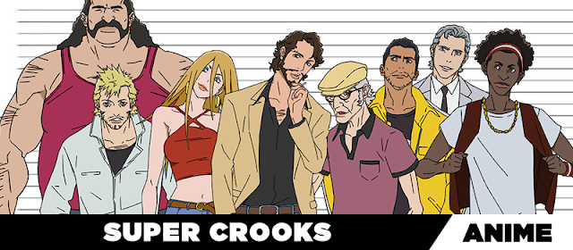

12/01/2022
Resenha: Smile Precure! - Anime

Informações
Nome: Smile Procure!
Episódios: 48
Lançamento: 2012
Estúdio: Toei Animation
Gênero: Comédia, Ação, Fantasia, Shoujo
Duração: 24 min
Continue lendo
07/01/2022
Resenha: Komi-san wa, Comyushou desu - Anime
Informações
Nome: Komi-san Wa, Comyushou Desu
Episódios: 12
Lançamento: 2021
Estúdio: OLM
Gênero: Comédia, Escolar, Slice of Life, Shounen
Duração: 23 min
Continue lendo
22/12/2021
Resenha: Mieruko-chan - Anime
Informações
Nome: Mieruko-chan
Episódios: 12
Lançamento: 2021
Estúdio: Passione
Gênero: Comédia, Escolar, Horror, Sobrenatural
Duração: 23 min
Continue lendo
21/12/2021
Resenha: Super Crooks - Anime

Informações
Nome: Super Crooks
Episódios: 13
Lançamento: 2021
Estúdio: Bones
Gênero: Ação, Drama, Suspense
Duração: 27 min
Continue lendo
20/12/2021
Resenha: Sankaku Mado no Sotogawa wa Yoru - Anime
Informações
Nome: Sankaku Mado no Sotogawa Wa Yoru
Episódios: 12
Lançamento: 2021
Estúdio: Zero-G
Gênero: Drama, Horror, Sobrenatural, Shounen Ai
Duração: 23 min
Continue lendo